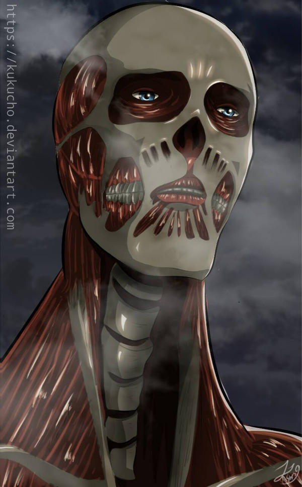

15 ans
163 cm
55 Kg
Bataillon d'exploration
15éme major du bataillon d'exploration (à la toute fin du manga)
titan colossal (60m de haut)
Armin était très timide en tant qu'enfant et avec le fait qu'il était physiquement faible, il était souvent considéré comme une cible facile pour les malfrats locaux. Autrefois il avait toujours besoin de l'aide d'Eren et Mikasa pour se protéger. Ainsi, il a grandi avec une très faible estime de soi mais en grandissant, il a appris à apprécier ses talents et à développer une meilleure opinion de lui-même. Il a un rêve : s'aventurer à l'extérieur des murs, voir le monde et l'océan, un rêve qu'il partage avec Eren.